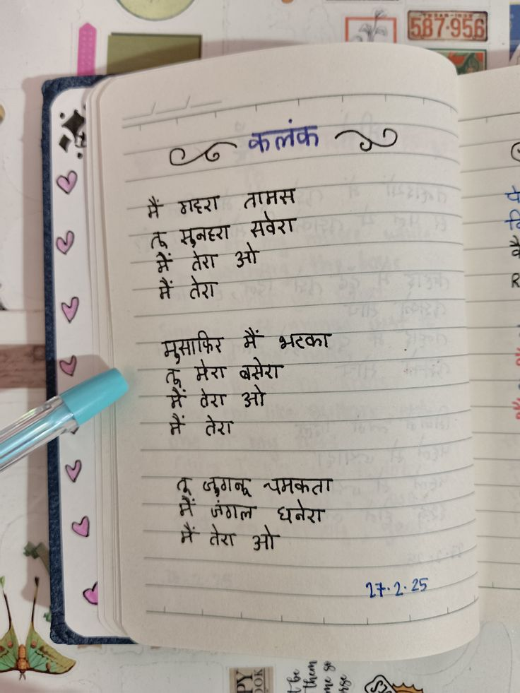

File: hin_sample_11.jpg

» ५ a ratt हा i SEED | ~ ws [i ¢ (aaa eee १५ RE HAN SO ¢ है yet sie ‘ yaar ART ४ || oa Hy Paes ee : agate seer ? ee क मेरा ar " Sar है { ele a | Yi % ५. Sl Fem a जाल ; 4 Lat मै दर हो Pay ! ही जा — 3. 0.29 7 7. जाए
mo SL : PO .. 22: pee tf «3 an, . oe tel : a i [a 58 7-G5pl Oke ; So [Ai pete LE eee | | । ° eer a ES टिका हरे | | SO अप इतर 3 ok EL | \. -मैंट देंगी a Ase PE oR rae | g | oe aes al ae लत कि PN अ्िजण न पए् एफ: BEC पाता पर RT 7 ता आाआ Ze ZED ji mee! न्न्ीः तेरा: न RM ye yi ie ee i | 2 TAR RR age ee गए Z i ; vy Wa ae Pe ar Be dosh Te Pe pee “A [ib Qi ताक 2 कट लाए a Ree pe a SM BES ae ला .
कलंक ठादरा सवरा ओ R भटका धनरा ४==>
❌ OCR Failed
हिंदुओं
रिगुरधुरी ठ्छकलंक ४८ मैं गद्रा तालस तू सुनइएा सवेश कें तेए ओ मैं तेए मुमाफ़ि मैं हुथ मेएा बझेठ हूँई बेटा ओ तैं तेए ये ज़गनू चणकता। नी जंगल घनेए में तेए ओ ईक-ॽ४
ग्ं गँ गदग त्रामस क गा त मुनाए मवेग क ग गं तेग र रंँ तेग मुमाफ़िर ग भ्रटका ट मेेर बते श्र ग रं गेग तेग क ग गा तं जुगनू जंगल चमकता धनेए गं तेग ओ ब ६ूं ग प क त ग ऋ गिेद